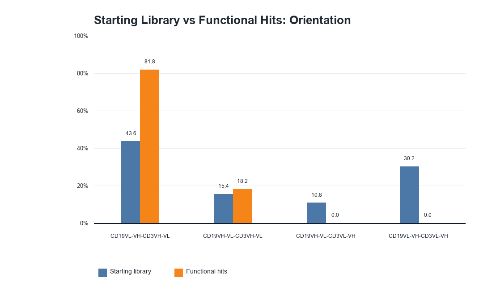
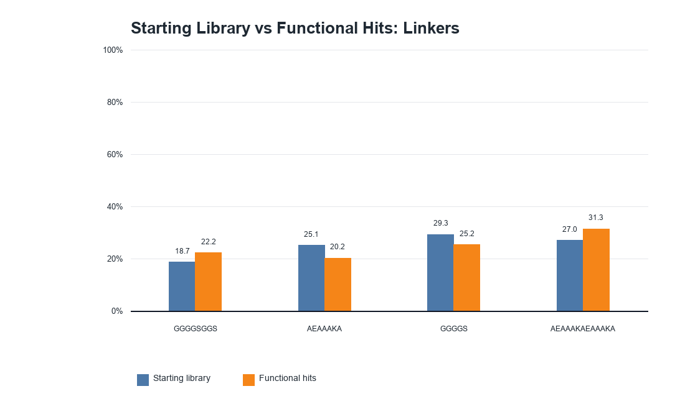
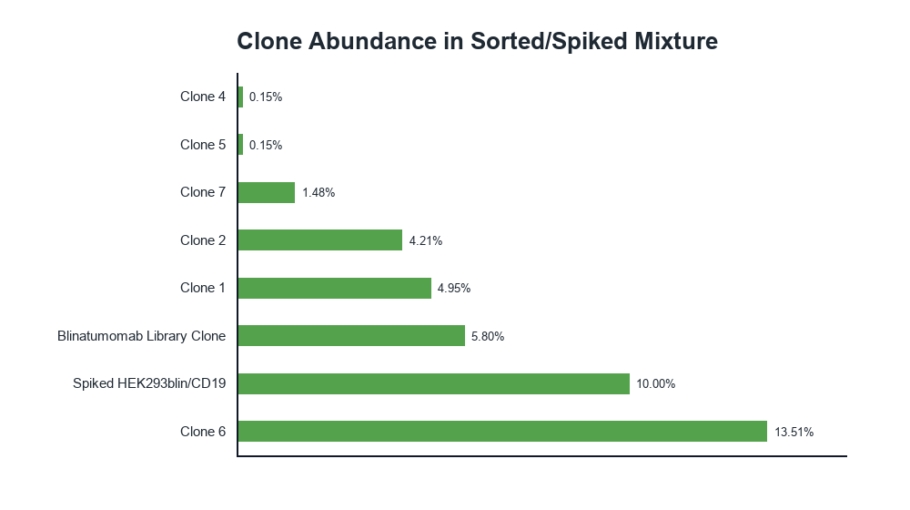
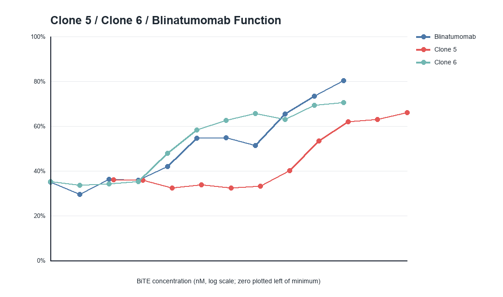

Input
Cleaned tables for starting-library features, functional-hit features, clone abundance, and dose-response function.
Biology data analysis artifact
A Python and pandas analysis of cleaned supplementary data from a CD19xCD3 BiTE droplet microfluidics screen. The goal was to compare starting-library composition against functional hits and identify which design features were enriched after screening.
Analysis Question
The project recomputes enrichment as the functional-hit percentage divided by the starting-library percentage. Values above 1.0 indicate enrichment among functional hits; values below 1.0 indicate depletion.
Cleaned tables for starting-library features, functional-hit features, clone abundance, and dose-response function.
Merged feature tables, calculated enrichment ratios, ranked categories, and regenerated visual summaries.
Feature-enrichment table plus four PNG figures for orientation, linker, clone abundance, and functional response.
This is a secondary data-analysis project using cleaned supplementary data, not a claim of direct BiTE experimental work.
Main Findings
CD19VL-VH-CD3VH-VL increased from 43.58% of the starting library to 81.82% of functional hits, a 1.88x enrichment.
L2K and TRX4 were the clearest enriched CD3 binders, while h38E4.v1 was strongly depleted.
B43 showed the strongest enrichment among CD19 binders, increasing from 18.69% to 26.25%.
Linker effects were more modest, with GGGGSGGS and AEAAAKAEAAAKA slightly enriched relative to the starting library.
Generated Figures
These figures were generated from cleaned CSV inputs so the analysis can be rerun and checked instead of existing only as a written summary.
Feature enrichment
This figure compares orientation prevalence before and after functional screening, showing the strongest shift toward CD19VL-VH-CD3VH-VL.

Feature enrichment
The linker comparison shows smaller shifts than orientation or CD3 scFv, which is useful context when interpreting which design variables changed most.

Clone abundance
The clone-abundance view separates top recovered clones from lower-abundance candidates and gives the analysis a concrete output beyond feature ratios.

Functional response
The dose-response figure connects feature-level enrichment back to functional assay readouts, while keeping the interpretation bounded to the cleaned supplementary dataset.

Technical Takeaways
Translated a therapeutic-screening question into categories, ratios, and figures that can be reviewed quickly.
Used cleaned CSV inputs and a notebook workflow to recompute tables and regenerate figures.
Separated raw data, cleaned tables, SQL schema/query files, notebook code, and output visuals.
Summarized results with caveats so the project reads as analysis practice, not inflated research ownership.